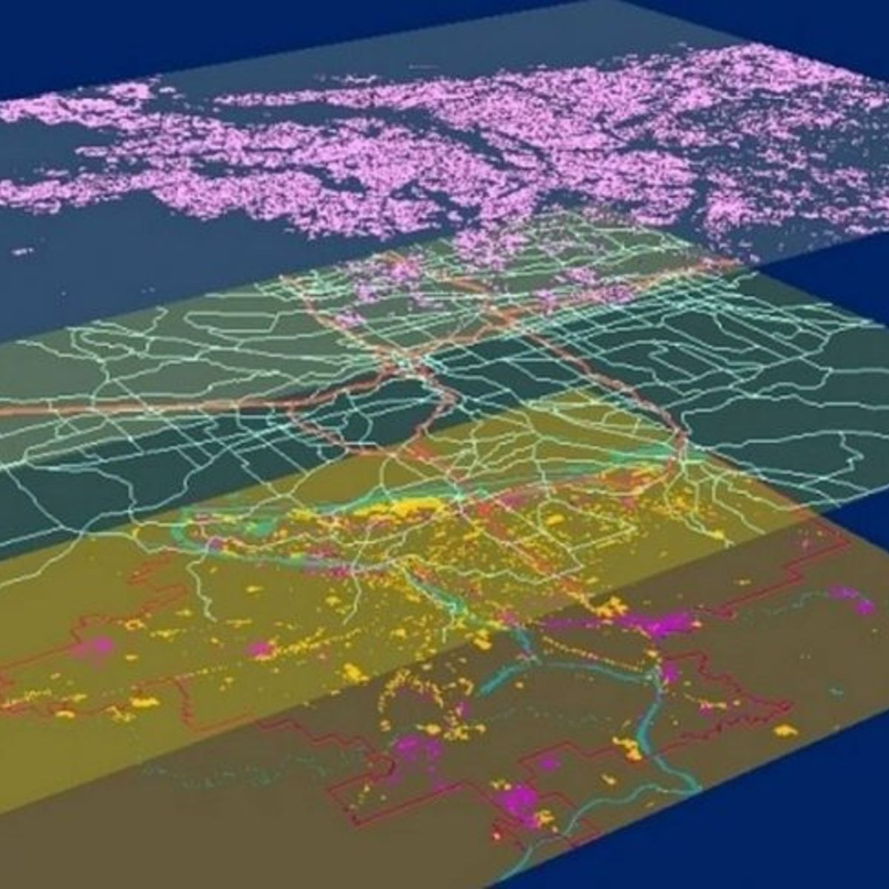
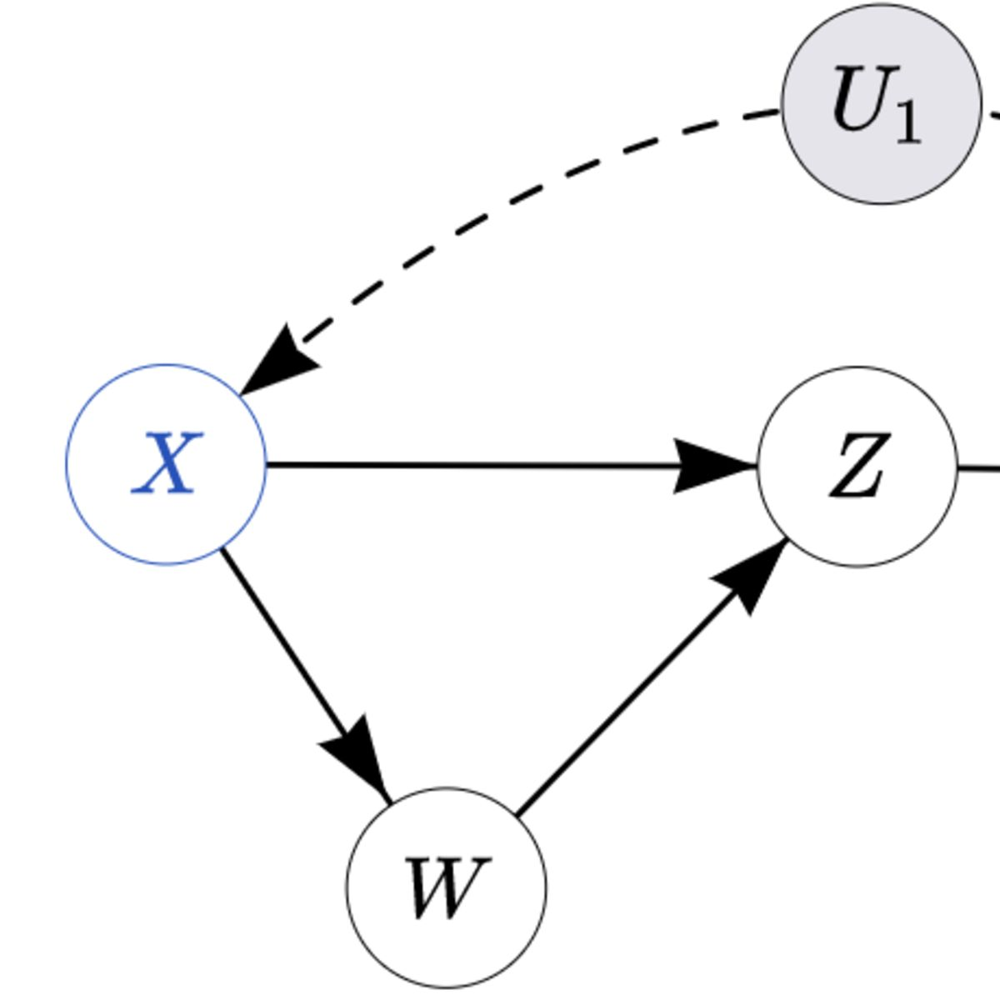

Projects
You can find the projects below and others on my
github page
.
Probability and NLP: Decryption algorithm using Metropolis Hastings

GIS: Analyzing land cover change using satellite imagery
ML: Forecasting energy consumption
Functional programming: Solutions to Haskell Programming

Causal inference: Simulation study to examine external validity bias in RCTs